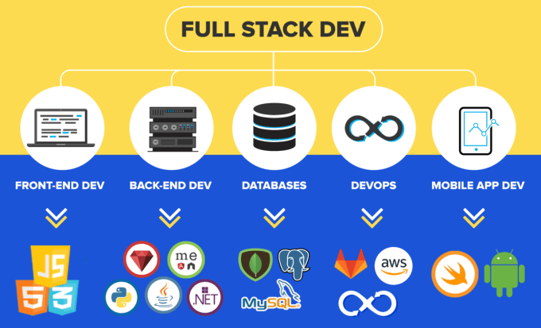

| Définition | Image | Tuto Vidéo |
|---|---|---|
| Le développeur full-stack est capable de créer un site internet de A à Z, du front-office au back-office. Il maîtrise donc l’ensemble des langages de description web (HTML 5, CSS 3, JavaScript) ainsi que les langages dits « serveurs », comme PHP. Il est aussi très recherché sur le marché de la tech. Étant donné sa polyvalence, il est moins spécialiste de chaque langage. |  |